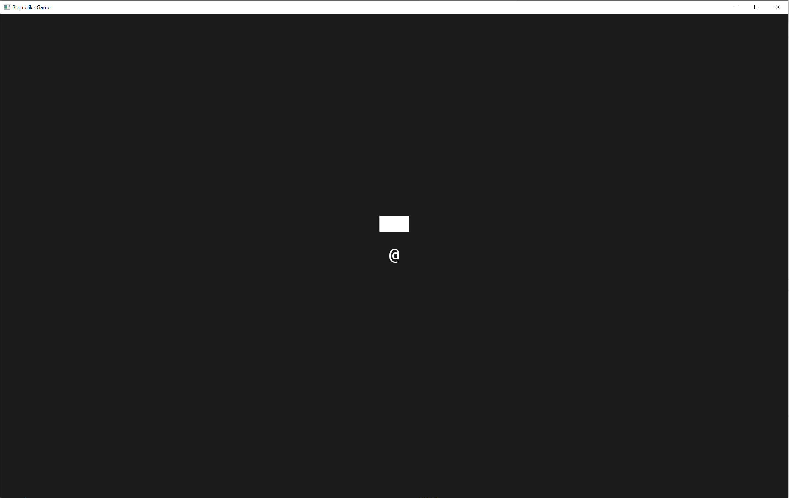

Map creation and adding walls
Moving player creation into separate files
Let's move the following code into maps.rs:
use bevy::prelude::Component;
#[derive(Component)]
pub struct TilePosition {
pub x: i32,
pub y: i32,
pub z: i32,
}
The fields are set to pub in order to get access to them from outside files.
And now we move the following code to player.rs:
use bevy::prelude::{
Commands, Component, Handle, SpriteSheetBundle, TextureAtlas, TextureAtlasSprite, Transform,
Vec3,
};
use crate::map;
#[derive(Component)]
pub struct Player;
pub fn spawn_player(mut commands: Commands, texture_atlas_handle: Handle<TextureAtlas>) {
commands
.spawn()
.insert(Player)
.insert_bundle(SpriteSheetBundle {
texture_atlas: texture_atlas_handle,
transform: Transform::from_translation(Vec3::new(0., 0., 0.)),
sprite: TextureAtlasSprite::new(94),
..Default::default()
})
.insert(map::TilePosition { x: 0, y: 0, z: 0 });
}
both of the files should have mod lines in main.rs:
mod map;
mod player;
Now the game compiles with cargo run and we can see the same picture as before with "@" sign in the middle.
Adding map resource
To add the map resource we change the map.rs file in the following way:
use std::collections::HashMap;
use bevy::prelude::{Component, Entity};
const NUM_LAYERS: i32 = 5;
#[derive(Component)]
pub struct TilePosition {
pub x: i32,
pub y: i32,
pub z: i32,
}
pub struct Map {
pub forward: Vec<Vec<Vec<Option<Entity>>>>,
pub backward: HashMap<Entity, TilePosition>,
pub width: usize,
pub height: usize,
pub num_layers: usize,
pub zero_pos: TilePosition,
}
impl Map {
pub fn new(width: usize, height: usize, zero_pos_x: i32, zero_pos_y: i32) -> Map {
let num_layers = NUM_LAYERS as usize;
Self {
forward: vec![vec![vec![None; width]; height]; num_layers],
backward: HashMap::new(),
width: width,
height: height,
num_layers: num_layers,
zero_pos: TilePosition {
x: zero_pos_x,
y: zero_pos_y,
z: 0,
},
}
}
}
impl std::fmt::Display for Map {
fn fmt(&self, f: &mut std::fmt::Formatter<'_>) -> std::fmt::Result {
write!(f, "<Map width={} height={}>", self.width, self.height)
}
}
Map struct has the following parts:
- The
forwardfield of the struct is the map itself where we can find entities in a three-dimensional vector. Two dimensions are the positions on the screen and the third dimension is the layer - The
backwardfield is where we can identify where a specific entity is on the map. width,heightandnum_layersare also stored there.- The constructor
newcreates emptyforwardandbackwardfields and sets thewidth,heightand thenum_layersof theMap.
We also added the implementation of the std::fmt::Display trait for debugging. Currently it does not print much but we will add more to it later.
In the main.rs file we created the map in setup():
//Create the map
let mut my_map = map::Map::new(
usize::try_from(WINDOW_COLUMNS).ok().unwrap(),
usize::try_from(WINDOW_ROWS).ok().unwrap(),
WINDOW_COLUMNS / 2,
WINDOW_ROWS / 2,
);
And then added it to resources so we could use it in systems later. The lines are inserted at the end of setup() function:
// Insert map as a resourse
commands.insert_resource(map);
Now the setup() function looks like this:
fn setup(
mut commands: Commands,
asset_server: Res<AssetServer>,
mut texture_atlases: ResMut<Assets<TextureAtlas>>,
) {
// Setup the sprite sheet
let texture_handle = asset_server.load("DejaVu Sans Mono22.png");
let texture_atlas =
TextureAtlas::from_grid(texture_handle, Vec2::new(TILE_WIDTH, TILE_HEIGHT), 31, 7);
let texture_atlas_handle = texture_atlases.add(texture_atlas);
// Add a 2D Camera
commands.spawn_bundle(OrthographicCameraBundle::new_2d());
//Create map
let mut my_map = map::Map::new(
usize::try_from(WINDOW_COLUMNS).ok().unwrap(),
usize::try_from(WINDOW_ROWS).ok().unwrap(),
WINDOW_COLUMNS / 2,
WINDOW_ROWS / 2,
);
// Spawn the player
player::spawn_player(&mut commands, texture_atlas_handle);
// Insert map as a resourse
commands.insert_resource(map);
}
Now move the code with constants to contants.rs file and add some more constants there. So now the new file contains the following:
pub const TILE_WIDTH: f32 = 22.;
pub const TILE_HEIGHT: f32 = 36.;
pub const WINDOW_COLUMNS: i32 = 80;
pub const WINDOW_ROWS: i32 = 30;
We add the constants to main.rs like this:
use constants::{TILE_HEIGHT, TILE_WIDTH, WINDOW_COLUMNS, WINDOW_ROWS};
Similar in map.rs:
use crate::constants::{TILE_HEIGHT, TILE_WIDTH};
The code should compile, but nothing new is happening.
Adding walls
Let's implement some methods for our TilePosition struct.
impl TilePosition {
pub fn new(x: i32, y: i32, z: i32) -> TilePosition {
Self { x: x, y: y, z: z }
}
pub fn to_vec3(&self) -> Vec3 {
Vec3::new(
self.x as f32 * TILE_WIDTH,
self.y as f32 * TILE_HEIGHT,
self.z as f32,
)
}
}
The new method is a constructor that allows us to write coordinates without explicitly stating the name of the coordinate.
The to_vec3 will be used later for sprite creation. Now our tile_position_to_transform() function is moved to map.rs and looks very simple:
pub fn tile_position_to_transform(tile_position: TilePosition, mut transform: Mut<Transform>) {
transform.translation = tile_position.to_vec3();
}
An empty struct is added to the code as a Component to identify walls:
#[derive(Component)]
pub struct Wall;
Now we add another function to impl Map:
fn spawn_a_wall(
&mut self,
commands: &mut Commands,
texture_atlas_handle: &Handle<TextureAtlas>,
position: TilePosition,
) {
let id = commands
.spawn()
.insert(Wall)
.insert_bundle(SpriteSheetBundle {
texture_atlas: texture_atlas_handle.clone(),
transform: Transform::from_translation(position.to_vec3()),
sprite: TextureAtlasSprite::new(186), // Full fill
..Default::default()
})
.insert(position.clone())
.id();
let corrected_x = position.x + self.zero_pos.x;
let corrected_y = position.y + self.zero_pos.y;
let corrected_z = position.z + self.zero_pos.z;
self.forward[usize::try_from(corrected_x).ok().unwrap()]
[usize::try_from(corrected_y).ok().unwrap()]
[usize::try_from(corrected_z).ok().unwrap()] = Some(id.clone());
self.backward.insert(id.clone(), position.clone());
}
This function will allow us to insert a wall from the setup() function in main.rs. Creation of the entity, adding a Wall component and inserting the sprite is very similar to the player code. Only now we choose number 186 from the texture, because we represent the wall with a filled rectangular. After adding TilePosition component we also return the Entity struct so that we could save the entity to the map. Then the position is converted from world coordinates that can be negative to map coordinates that are positive.
With self.forward we then add the entity to the 3d vector.
In addition we also add the entity and the position to self.backward so we could find the position in the array based on id.
The next function is the function that will be called from setup() in main.rs to add three walls:
pub fn spawn_walls(
&mut self,
commands: &mut Commands,
texture_atlas_handle: &Handle<TextureAtlas>,
) {
self.spawn_a_wall(commands, texture_atlas_handle, TilePosition::new(-1, 2, 0));
self.spawn_a_wall(commands, texture_atlas_handle, TilePosition::new(0, 2, 0));
self.spawn_a_wall(commands, texture_atlas_handle, TilePosition::new(1, 2, 0));
}
So in the function we just repeat the call to spawn_a_wall function with different coordinates.
and also add the following line in setup() function in main.rs to spawn the walls:
my_map.spawn_walls(&mut commands, &texture_atlas_handle);
fn setup(
mut commands: Commands,
asset_server: Res<AssetServer>,
mut texture_atlases: ResMut<Assets<TextureAtlas>>,
) {
// Setup the sprite sheet
let texture_handle = asset_server.load("DejaVu Sans Mono22.png");
let texture_atlas =
TextureAtlas::from_grid(texture_handle, Vec2::new(TILE_WIDTH, TILE_HEIGHT), 31, 7);
let texture_atlas_handle = texture_atlases.add(texture_atlas);
// Add a 2D Camera
commands.spawn_bundle(OrthographicCameraBundle::new_2d());
//Create the map
let mut my_map = map::Map::new(
usize::try_from(WINDOW_COLUMNS).ok().unwrap(),
usize::try_from(WINDOW_ROWS).ok().unwrap(),
WINDOW_COLUMNS / 2,
WINDOW_ROWS / 2,
);
my_map.spawn_walls(&mut commands, &texture_atlas_handle);
// Spawn the player
player::spawn_player(&mut commands, texture_atlas_handle);
// Insert the map as a resourse
commands.insert_resource(my_map);
}
Now it compiles and we can see the walls. If we move to the walls they do not prevent us from moving to their tiles. This is the next chapter. 
The final code could be found here: Chapter03 code